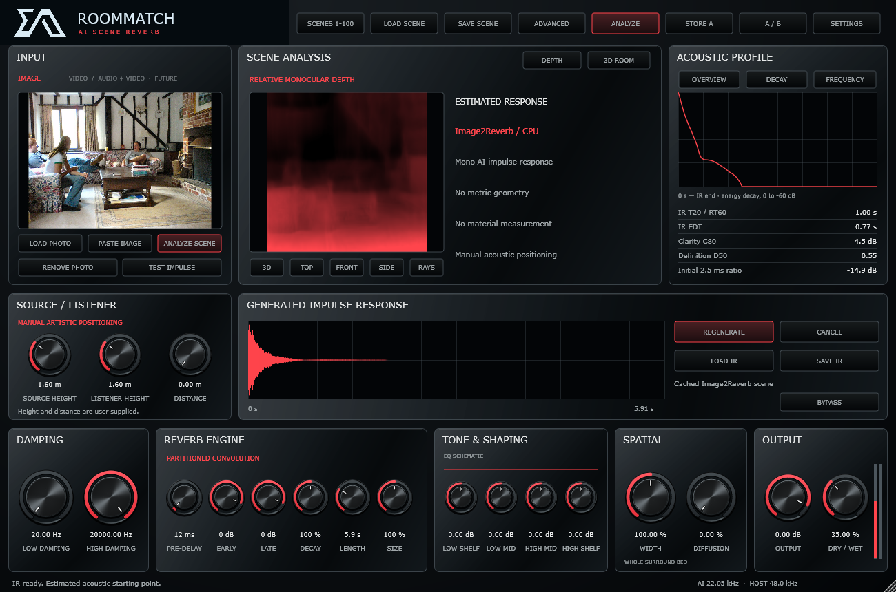

Bring in a room
Load a photograph of a space. RoomMatch uses the image as the input for its scene analysis.
PHOTOGRAPH
Meet RoomMatch. A photograph becomes the starting point for your next reverb. Explore the space, sculpt its character, and bring it into your mix.
01 / THE INSTRUMENT
From the first impulse response to the final detail. RoomMatch puts scene analysis, room positioning, and reverb shaping in one workspace.

Actual RoomMatch beta interface. The 3D room is manually adjustable; photo analysis does not measure room geometry.
02 / FROM IMAGE TO IMPULSE
A visual idea, an experimental acoustic response, and the controls to take it somewhere new.
Load a photograph of a space. RoomMatch uses the image as the input for its scene analysis.
Analyze the scene to generate an AI impulse response. Regenerate to explore another variation.
Adjust the room model and shape the reverb. Save the scene, compare A/B, and recall it in your session.
03 / BEYOND THE FIRST RESPONSE
Control decay, pre-delay, early and late reflections, damping, EQ, and dry/wet balance.
Edit source and listener positions, dimensions, and materials in the interactive 3D room.
Store up to 100 scene slots with the original impulse response, settings, and room model.
Work with 1–64 channels and multichannel layouts. Atmos object rendering stays with your DAW.
04 / ROOMMATCH BETA · FREE, FOREVER
RoomMatch beta is ready to try. Every EA Audio plugin is free, and will remain free forever. Choose the installer for your computer below.
Across all published versions.
Installer downloads reported by GitHub, including repeat downloads.
Last checked 16 Oct 2026, 16:40 UTC. Counts refresh periodically.
x64 · VST3 + Standalone
102 downloads
Apple Silicon · VST3 + Standalone
93 downloads
Intel · VST3 + Standalone
90 downloads
Release notes & installation details ↗ · Third-party notices ↗
An evolving experiment. Photo analysis suggests an acoustic starting point; it does not measure a room or guarantee a matching decay time.
OPTIONAL SUPPORT
I make these tools for my own audio projects and share them in the hope they help someone else. You can support what I do with a contribution, or by listening to my music.
Every EA Audio tool is free, and will remain free forever.
INDIA / UPI
Choose any amount in your UPI app.
Support with UPIOn a computer? Copy the ID into Google Pay or another UPI app on your phone. Check the recipient before paying.
PAYPAL
PayPal donations are not supported for this account’s country. Please use Google Pay / UPI.
ANOTHER WAY TO SUPPORT
I’m Ebin Augustin, an EDM producer based in Kerala, India. Explore my music on your favourite platform. If a track connects with you, save it, share it, or follow along for more.
A listen, a follow, or sharing a favourite track means a lot. Thank you for supporting the music behind the tools.
A FEW THINGS TO KNOW
RoomMatch is EA Audio’s first audio plugin: an experimental image-to-reverb tool. Load a room photo, generate an impulse response, and shape its playback with reverb and spatial controls.
No. The photo model suggests an acoustic starting point. Room dimensions, materials, and positions are manually adjustable, and the image is not a metric reconstruction or acoustic measurement.
RoomMatch beta is available for Windows x64, Mac Apple Silicon, and Mac Intel. Each package includes a VST3 plugin and a standalone application.
The complete packages include the AI model and runtime for offline inference. First-time preparation can take a few minutes. See the release notes for installation details.
Close your DAW before installing. On Windows, extract the complete ZIP and run Install RoomMatch.cmd. On Mac, choose the PKG for Apple Silicon or Intel. The Mac packages are not Apple notarized. See the release notes for installation details.
Tools for sound.
Room for imagination.